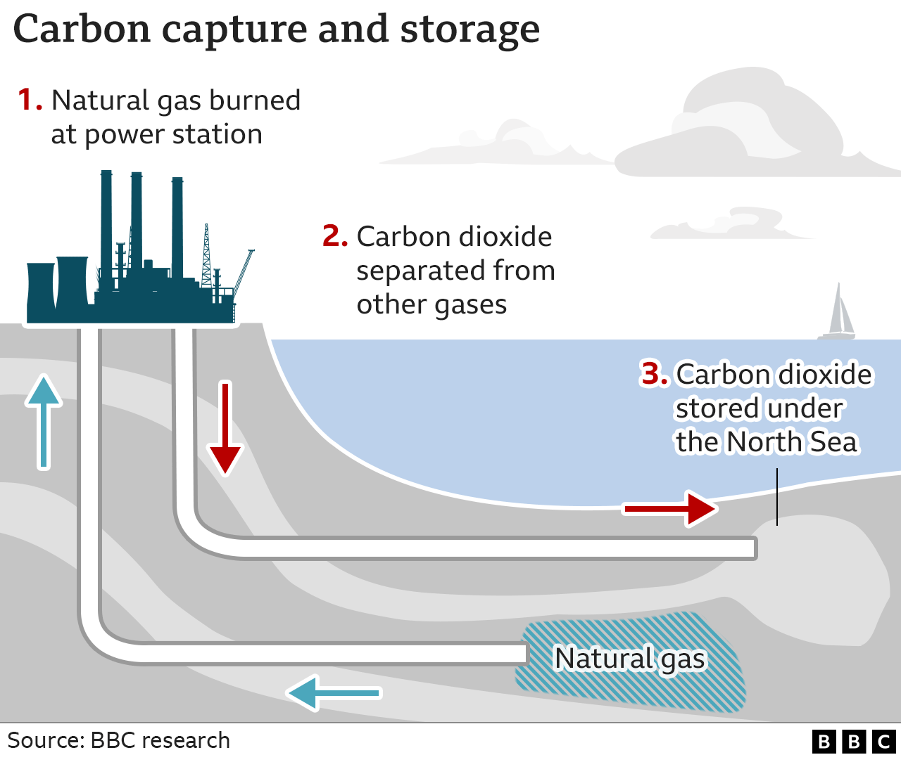
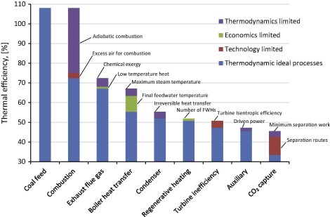

Emission Control
Coal emissions are a significant contributor to air pollution and climate change. To minimize the environmental impact of coal mining and usage, several emission control strategies can be implemented:
1. Carbon Capture and Storage (CCS)
CCS involves capturing carbon dioxide (CO2) emissions from coal plants before they are released into the atmosphere and storing them underground in geological formations.
2. Switching to Cleaner Energy Sources
Transitioning from coal to cleaner energy sources such as natural gas, solar, and wind power can significantly reduce emissions.
3. Improving Coal Plant Efficiency
Enhancing the efficiency of coal plants can reduce the amount of coal burned for the same level of energy output, lowering emissions.
4. Implementing Pollution Control Technologies
Using technologies like scrubbers and filters can capture harmful pollutants before they are released from coal-fired power plants.